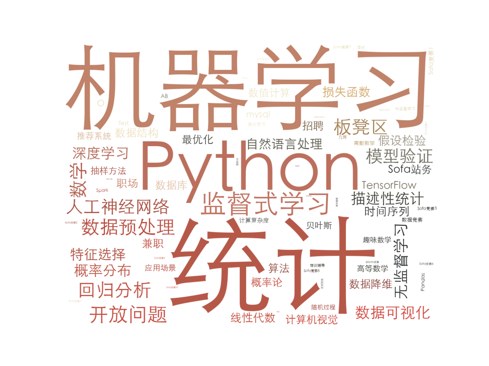

Statistic
简单的统计sofasofa的一些数据，不是实时数据
爬取的sofasofa数据，可以从这里获取
问题归类，是按照sofasofa内部标签组成的。因为主要的两个标签是“python”以及“统计/机器学习”，为了让问题对应主题划分的更细，问题主题的选取都是从“二级标签”(不是前面两个标签)选取,
如果“二级标签”对应的问题数量较少，就会使用前面两个标签作为主题。
SofaSofa-TagCloud
